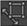
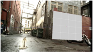
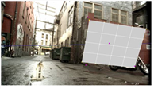
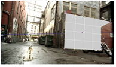
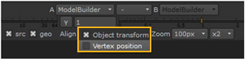
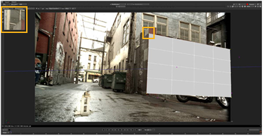
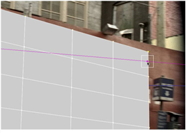

要定位形状:
| 1。 | 如果 对齐模式 尚未激活，请单击  在 ModelBuilder 工具栏中激活它。 |
| 2. |
查看器也应该自动锁定到您的输入相机节点。如果不是这样，请从查看器右上角的下拉菜单中选择相机，然后单击
|
只有当查看器锁定到输入相机时，定位手柄才会出现。
| 3. | 使用 对齐 查看器顶部的下拉菜单，选择是要通过变换整个形状还是单个顶点来定位形状: |
• 对象变换 -ModelBuilder 试图变换整个对象。这保证了平面多边形保持平坦，多边形之间的角度不会改变，但是它不太灵活，因为你总是一次改变整个对象。
|
 |
 |
| 原来的卡。 |
改造后的卡
整个对象。 |
• 顶点位置 -ModelBuilder 分别变换每个顶点。虽然这可能是一种非常方便的方法来使几何图形完全匹配，但也可能导致非平面多边形和其他问题。
|
|
 |
| 原来的卡。 |
改造后的卡
顶点位置。 |

| 4. | 移动几个顶点，使它们与要建模的对象的形状相匹配。例如，如果要使用立方体为建筑建模，请拖动立方体的角，以便它们与建筑的角对齐。 |
当你点击一个顶点时，你会注意到浏览器左上角有一个缩放窗口。这允许您准确定位顶点，而无需缩放整个查看器。要调整缩放窗口的大小和放大系数，请使用 缩放 查看器顶部的下拉菜单。

执行此操作时，ModelBuilder 将变换形状以适应调整后的顶点位置。它还在顶点的 2D 位置上设置关键点。在查看器中，任何设置了关键点的顶点都会变成紫色。
| 5. | 转到不同的框架，移动其中一个蓝色顶点，以匹配其在 Src 镜头。当您这样做时，会出现一条紫色线。当前帧上顶点的正确位置应该位于该行的某个位置; 但是，如果需要，可以将顶点从该行拖动。 |

仅定位一个顶点通常足以使对象位置正确，但不能旋转或缩放。
| 6. | 为了锁定对象的旋转和缩放，请将多几个顶点移动到它们的正确位置。 |
| 7. | 通过序列回放。对象应该大致保持在正确的位置相对于 Src 镜头。如果看到任何顶点开始漂移，请将它们移动到正确的位置。 |
| 8。 | 继续到 编辑形状 . |
|
|